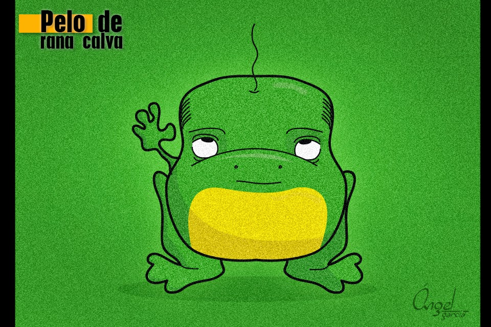
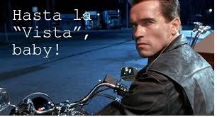

Data snatch
Esta es la historia de un día desafortunado en la vida de Datatiana y sus aventuras.
Todo empieza cuando se levanta con el pie izquierdo, se tropieza con la cama y se golpea el dedito chiquito del pie 😖, grita un padrenuestro y se va a bañar. Antes de irse para la oficina, decide que quiere desayunar
¿Qué debería desayunar Datatiana?
Banano con café * Ella había visto un video en TikTok que decía que esta combinación era buena para el cabello, pero ella decidió comérselo, en vez de echárselo 🙊
Datatiana desayunó Arepa con Huevo
Así, comenzó su día con toda la energía para ir a la oficina. Entra al daily, y después de echar chisme 🤫 y dar el status de sus tareas, informa que terminó la tarea asignada para este sprint y que puede tomar un ticket adicional.
Ayúdale a Datatiana a escoger su próximo ticket:
*TK-666: nuestros servicios DataFactory y Synapse en Azure presentan alta latencia. Hay que realizar pruebas en GCP, para tener una nube híbrida debido a que se ha informado que Azure es más costoso.
Se debe buscar una herramienta equivalente en GCP para Azure Synapse y Azure Data Factory
Back to top
Datatiana desayunó Banano con café
¿Cómo vas a desayunar eso Datatiana? 🤦
La pobrecita sufrió un cólico terrible y salió corriendo al baño. Ese día se dió cuenta que podía correr más rápido que un rayo para poder llegar al baño 🐒
Luego salió corriendo de su casa porque iba tarde para la oficina, desafortunadamente se resbaló en la salida de su casa (Con la cascara del banano) y se golpeó la cabeza.
Back to top
Datatiana desayunó un Brunch casero
Por tratar de hacer un desayuno aesthetic 💅, se le fue el tiempo y llegó tarde a la oficina. Le tocó pagar parqueadero 😓
Entra a su daily, y después de echar chisme 🤫 y dar el status de sus tareas, informa que terminó la tarea asignada para este sprint y que puede tomar un ticket adicional.
Estos son los tickets disponibles ¿Que ticket debería escoger Datatiana?:
*TK-666: nuestros servicios DataFactory y Synapse en Azure presentan alta latencia. Hay que realizar pruebas en GCP, para tener una nube híbrida debido a que se ha informado que Azure es más costoso.
Se debe buscar una herramienta equivalente en GCP para Azure Synapse y Azure Data Factory
Back to top
Datatiana desayunó avena y fruta
Después de comer su bowl de avena, comenzó su día con toda la energía para ir a la oficina.
Entra a su daily, y después de echar chisme 🤫 y dar el status de sus tareas, informa que terminó la tarea asignada para este sprint y que puede tomar un ticket adicional.
Estos son los tickets disponibles ¿Que ticket debería escoger Datatiana?:
*TK-666: nuestros servicios DataFactory y Synapse en Azure presentan alta latencia. Hay que realizar pruebas en GCP, para tener una nube híbrida debido a que se ha informado que Azure es más costoso.
Se debe buscar una herramienta equivalente en GCP para Azure Synapse y Azure Data Factory
Back to top
Documentar el código del proceso
Como Datatiana conocía muy bien el código, lo documentó fácilmente.
Entregó la documentación y por eso le hicieron Kudos en el All Hands por su eficiencia 👏
Así que decide continuar con el siguiente ticket
*TK-666: nuestros servicios DataFactory y Synapse en Azure presentan alta latencia. Hay que realizar pruebas en GCP, para tener una nube híbrida debido a que se ha informado que Azure es más costoso.
Se debe buscar una herramienta equivalente en GCP para Azure Synapse y Azure Data Factory
Back to top
Solucionar un bug de su código del último sprint
Datatiana no recuerda cómo hizo funcionar el código, así que decidió tomar una siesta para buscar iluminación
Al rato, se quedó dormida y soñó que estaba en el mundo de los juegos del hambre y que había perdido 💀
Cuando se despertó:
Back to top
Ticket TK-666
En este momento encontramos que nuestros servicios DataFactory y Synapse en Azure presentan alta latencia. Queremos realizar pruebas en otra nube, GCP, para tener una nube híbrida debido a que se ha informado que Azure es más costoso. Queremos buscar una herramienta equivalente en GCP para Azure Synapse y Azure Data Factory
Datatiana no sabe qué hacer y decide pedir ayuda:
Back to top
Pide ayuda a ChatGPT y este alucina
Se implementó la solución, se siguieron las instrucciones sin validar la forma de cobro 🙈.
Se creó la instancia pero nunca se utilizó y todo se hizo con BigQuery, el cliente aceptó la solución y quedó feliz.
Peeeero, 2 meses después de la implementación , el Project Manager pide que se revisen los costos, ya que en los últimos 2 meses se incrementaron.
Se crea ticket para revisar:
Back to top
Pide ayuda a ChatGPT
Datatiana valida muy bien la solución entregada por ChatGPT
Se la muestra al Tech Lead y este sigue las políticas para el aprovisionamiento adecuado de los recursos, pero encontró que la herramienta recomendada por ChatGPT era muy costosa y comenzaba a cobrar desde su activación
Entre los dos deciden no activar el servicio, y además sugieren al equipo revisar los demás servicios activos.
El equipo:
Back to top
Consulta en el másters of Data sobre quién es el máster de GCP
Consulto con un DevOps de GCP, y éste informó que el servicio propuesto tenía un costo mensual muy elevado y esta información se validó con el cliente. El PO del cliente decide no implementarlo y propone buscar una alternativa Open Source.
¿Qué debería hacer el equipo?
*Patrocinador oficial de la comunidad de data
Back to top
El equipo encuentra el error
Habla con el PM para explicarle al cliente el sobrecosto, y tratan de llegar un acuerdo con el cliente:
Back to top
El equipo encuentra NO el error
El cliente contrata un consultor externo, y se detecta el error y cancela el contrato con el equipo y con Endava
Back to top
El equipo ignora el problema
El cliente se enoja mucho y decide no renovar el contrato con Endava
Back to top
Equipo reinicia estadísticas de facturación para ocultar el problema
El cliente se da cuenta del fraude, se enoja mucho y decide no renovar el contrato con Endava
Back to top
El cliente es muy buena gente
Sugiere que sea asumido 50% por él y 50% por Endava*.
*Con un descuento en su próxima factura
Back to top
El cliente es mala clase
Cancela el contrato con todo el equipo y con Endava
Back to top
Revisan recursos activos en la nube del Proyecto
Con el aprendizaje obtenido de revisar estos recursos, se hizo una revisión general de los servicios que se tienen activos actualmente en la nube de Azure y El DevOps se dió cuenta que adicionalmente habían otros 2 servicios que estaban consumiendo recursos adicionales. Se cancelaron estos servicios y el cliente nos dio un bono del D1 por la optimización
Back to top
Se hacen los locos
El equipo continua con sus vidas y siguen con el siguiente ticket
Back to top
Se van a ver el partido de la selección
Mientras a la selección le anulaban un gol, llegó una alerta desde el VP de TI del cliente en el cual notificaba que el sistema estaba caído y cada minuto les hacía perder 1000 USD
Pero como Datatiana estaba borracha, no se enteró. Al otro día se levantó con guayabo y ....
Back to top
Buscar opciones Open Source
El equipo encuentra una Herramienta opensource: https://airbyte.com/, y realiza un POC, descubre que es menos eficiente pero es más ecónomica, Al cliente le encanta el resultado y nos renueva el contrato por 5 años
Le dan Kudos a todos en el All Hands
Back to top
No buscan opciones ni ofrecen alternativas
El equipo se hacen los locos y el cliente se enoja mucho.
Back to top
Datatiana y el equipo se va a tomar pola de Avellana
En la conversación sobre el problema, Datatiana recuerda que en un proyecto anterior trabajó con una herramienta Open Source
Al otro día, reune al equipo y les propone explorarla
Termina siendo un éxito para el proyecto
Back to top
THE END (1)
¡Por un pelo de rana calva!

Back to top
THE END (2)
Hiciste una embarrada muy grande y poco ética Datatiana ¡Por eso te echaron!

Back to top
THE END (3)
¡Felicitaiones Datatiana!
Eres un ejemplo para la comunidad

Back to top
THE END (4)
Datatiana se levanta asustada y se da cuenta que la Matrix era real, ella estaba en coma y se despertó, comienza una vida para ser la elegida
Back to top
THE END (5)
Datatiana vivió feliz para siempre en el mundo de Alicia y el país de las maravillas
Back to top